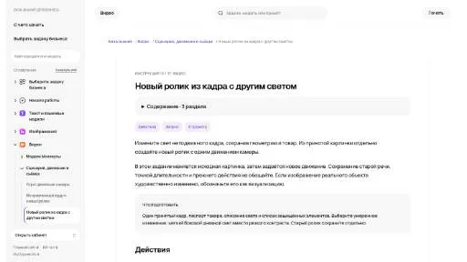

ClipchampВидео
«Clipchamp» создаёт видеоматериал по заданию. «Clipchamp» помогает подготовить персонализированный видеоматериал.
Раздел «Видео → видео»: варианты ИИ для этой задачи, описания возможностей и переходы к обзорам. Сравните несколько решений на одинаковом примере.
Подготовьте альтернативную световую версию сцены через неподвижный кадр исходного видео. Опишите допустимые изменения и защищённые детали; после принятия картинки создавайте отдельный ролик, учитывая, что новая генерация не обязана повторять прежнее действие и звук.
Измени освещение выбранного кадра мастерской на мягкое утреннее. Сохрани положение стола, инструментов и дверного проёма; подготовь запрос для отдельного медленного наезда камеры, не обещая повторить действие исходного видео.

«Clipchamp» создаёт видеоматериал по заданию. «Clipchamp» помогает подготовить персонализированный видеоматериал.
Eklipse выделяет игровые моменты из трансляций Twitch и подготавливает их для коротких социальных форматов. Предусмотрены варианты TikTok, Reels и Shorts, а также дальнейшее редактирование и публикация. Продукт связывает длинный стрим с отдельными видеособытиями, позволяя использовать заметные участки исходной трансляции как самостоятельные материалы для другой площадки.
Сравнивать «Hellohola» с другими инструментами раздела «Видео» удобнее на одинаковом исходном материале.
MaximusAI генерирует анимацию и визуальные варианты оформления с применением ИИ. Набор возможностей охватывает световые эффекты, разные стили и интерактивное общение через чат. Инструмент объединяет создание визуального материала с разговорным взаимодействием, чтобы использовать оба подхода при подготовке творческого содержимого.
«Nvidia Maxine» представлен в разделе «Видео». При выборе проверьте нужную операцию и условия работы с результатом.
«Papercup» представлен в разделе «Видео». При выборе проверьте нужную операцию и условия работы с результатом.
Для «Summarycat» сначала определите свою задачу и требуемый результат. Карточка относится к направлению «Видео».
«SwapFans» меняет лицо в визуальном материале. «SwapFans» работает с материалами для социальных площадок.
«Wefaceswap» меняет лицо в визуальном материале.
«10LevelUp» подготавливает короткие фрагменты видеозаписи. «10LevelUp» работает с материалами для социальных площадок.
Сравнивать «anvsoft.com» с другими инструментами раздела «Видео» удобнее на одинаковом исходном материале.
AutoPod помогает редактировать подкасты в Adobe Premiere Pro. В наборе предусмотрены работа с несколькими камерами и создание фрагментов для соцсетей в разных форматах. Продукт связывает подготовку основного выпуска с его короткими версиями, когда одно исходное обсуждение используется для нескольких видов дальнейшей видеопубликации.
Для «BlipCut» сначала определите свою задачу и требуемый результат. Карточка относится к направлению «Видео».
«FaceMagic» меняет лицо в визуальном материале. «FaceMagic» также создаёт видеоматериал по заданию.
Сравнивать «PodCut» с другими инструментами раздела «Создание контента» удобнее на одинаковом исходном материале.
Для «TLDWAI» сначала определите свою задачу и требуемый результат. Карточка относится к направлению «Видео».

Vizard.ai используют для задачи: собирать видеосцену по описанию или визуальному исходнику. Ещё одно направление работы: готовить видеоматериалы для публикации.
Dubformer переводит и дублирует видеоматериал с применением ИИ. Доступные функции включают автоматический перевод, контроль человеком и согласование движения губ с речью. Решение предназначено для языковой адаптации видео, связывая обработку звучания с проверкой качества и визуальным соответствием новой речевой дорожке.
«Epidemic Sound» представлен в разделе «Видео». При выборе проверьте нужную операцию и условия работы с результатом.
Сравнивать «GoEnhance» с другими инструментами раздела «Видео» удобнее на одинаковом исходном материале.
HitPaw Video Object Remover помогает убирать лишние элементы видеокадра, включая людей на фоне, текст и другие объекты. Обработку стоит оценивать в движении, а не только на одном стоп-кадре. Проверьте границы восстановленного участка, последовательность кадров и сохранность нужных деталей рядом с удалённым элементом.
Сравнивать «Reallife3d» с другими инструментами раздела «Видео» удобнее на одинаковом исходном материале.
Сравнивать «Face Swap App» с другими инструментами раздела «Видео» удобнее на одинаковом исходном материале.
«Framedrop (framedrop.gg)» создаёт видеоматериал по заданию. «Framedrop (framedrop.gg)» также помогает подготовить персонализированный видеоматериал.
Сравнивать «Potion» с другими инструментами раздела «Видео» удобнее на одинаковом исходном материале.
«Smili Media» подготавливает короткие фрагменты видеозаписи. Дополнительно «Smili Media» работает с материалами для социальных площадок.

Gencraft используют, чтобы получать изображения из словесного задания. Ещё одно направление работы: менять фотографии с учётом выбранного оформления.
«HappySRT» работает с текстом субтитров.
Сравнивать «SumyAI» с другими инструментами раздела «Видео» удобнее на одинаковом исходном материале.
Для «Vanity AI» сначала определите свою задачу и требуемый результат. Карточка относится к направлению «Видео».
«Vocut» преобразует речевую запись в письменный материал. Дополнительно «Vocut» помогает собирать и править видеоматериал.

Vsub используют, чтобы собирать видеосцену по описанию или визуальному исходнику. Ещё одно направление работы: готовить видеоматериалы для публикации.
«AISaver» меняет лицо в визуальном материале.

ChapterMe рассчитан на задачи, где нужно собирать видеосцену по описанию или визуальному исходнику. Ещё одно направление работы: готовить видеоматериалы для публикации.
Perfectly Clear Video улучшает видеоматериал посредством обработки отдельных кадров с участием ИИ. Инструмент корректирует освещение и цветовые искажения. Предусмотрена работа как с заранее записанным роликом, так и с текущим видеопотоком, чтобы применять обработку в разных задачах организации.
Сравнивать «PS2 Filter AI» с другими инструментами раздела «Видео» удобнее на одинаковом исходном материале.
Для «Quizmixer» сначала определите свою задачу и требуемый результат. Карточка относится к направлению «Образование».
Rask помогает локализовать видео на разные языки с участием ИИ. Среди операций есть перевод, титры и субтитры, а также озвучивание и дубляж. Инструмент предназначен для компаний и авторов, включая преподавателей, которые подготавливают языковую версию своего видеоматериала для аудитории.
SummarAIze перерабатывает длинные аудио и видеоматериалы средствами ИИ. Продукт подготавливает краткие изложения и стенограммы, а также статьи и письма. Публикации соцсетей и видеоклипы дополняют набор форматов, связывая содержание исходной записи с дальнейшей подготовкой материалов для выбранных каналов автора.
Страница 2 из 2